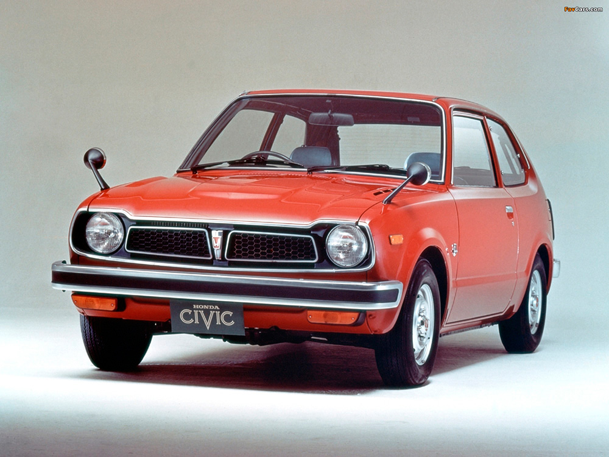

Civic 1972 ¡El más lento de la historia!
La primera generación del Civic fue lanzada al mercado en julio de 1972. Inicialmente tenía una carrocería Cupé de dos puertas, a la que se añadió un Hatchback de tres puertas en septiembre de ese año. Más tarde fueron añadidos los Hondamatic (con transmisión automática) y Civic CVCC en 1973. Estos fueron complementados en 1974 por el deportivo Civic RS2.. Leer más